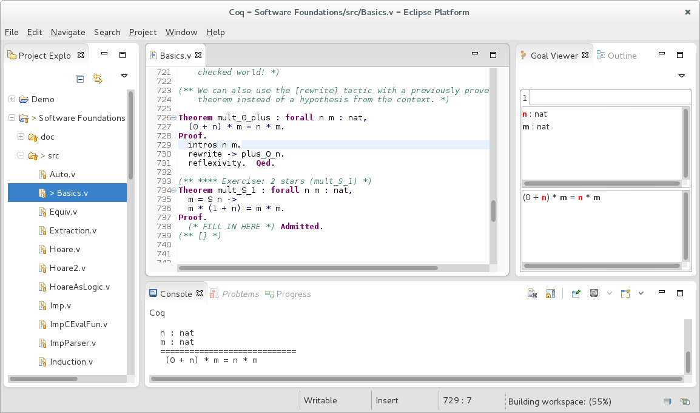

Coqoon is an Eclipse plugin providing a feature-complete development environment for Coq proof scripts.
Coqoon is developed alongside Kopitiam, an Eclipse plugin for certifying full functional correctness of Java programs. 
Coqoon works well with other Eclipse plugins — add more to add new features like version control.
Automatically rebuild dependencies when proof scripts change, and forget about manual load path configuration.
Structure Coq developments like Java
projects, manage project
interdependencies with a user
interface, and avoid cluttering source
folders with .vo files.
Not everyone can put up with Eclipse, so Coqoon uses project configurations compatible with those of Proof General and CoqIDE.
Coqoon is tested regularly on Windows, Mac OS X and Linux.
Coqoon - http://www.itu.dk/research/tomeso/coqoon/e42into the Work with: text box, and press Enter.
Coqoon's source code is hosted on GitHub, and can be checked out anonymously using the command
git clone git://github.com/hannesm/Kopitiam.git
Report bugs, issues and problems using the Coqoon issue tracker (which is shared with the Kopitiam project).
Coqoon is managed by Jesper Bengtson and developed by Hannes Mehnert and Alexander Faithfull (who also maintains this webpage).